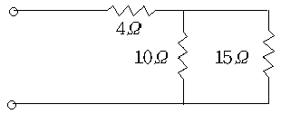
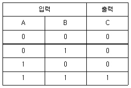
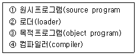
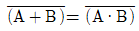
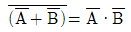
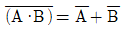
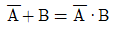
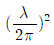

무선설비기능사 (2007-01-28 기출문제)
1과목: 임의 구분
1. 전동기의 회전 방향을 알기 위한 법칙으로 올바른 것은?
- 앙페르의 오른나사 법칙
- 플레밍의 왼손 법칙
- 쿨롱의 법칙
- 렌츠의 법칙
(정답률: 알수없음)

2. 다음 중 집적회로(Integrated Circuit)의 장점이 아닌 것은?
- 신뢰성이 높다.
- 대량 생산할 수 있다.
- 회로를 초소형으로 할 수 있다.
- 주로 고주파 대전력용으로 사용된다.
(정답률: 알수없음)
3. 다음 중 이미터 폴로워(Emitter follower) 증폭기의 특징이 아닌 것은?
- 입력전압과 출력전압은 동상이다.
- 입력임피던스는 매우 높다.
- 출력임피던스는 낮다.
- 전류이득은 대략 1 이다.
(정답률: 알수없음)
4. 콘덴서 C1=20㎌, C2=40㎌을 직렬로 연결하고 양단에 300[V]의 전압을 걸었다. C1 양단에 걸리는 전압은 몇 [V]인가?
- 50
- 100
- 150
- 200
(정답률: 알수없음)
5. 궤환 회로에서 궤환을 β, 증폭의 이득을 A라 할 때 바크하우젠의 발진조건으로 옳은 것은?
- │βA│=1이고, 위상은 동상이다.
- │βA│>1이고, 위상은 역상이다.
- │βA│<1이고, 위상은 동상이다.
- │βA│의 크기에 상관없으며, 위상은 역상이다.
(정답률: 알수없음)
6. 방송파의 진폭을 신호파에 따라 변화시키는 변조 방식은?
- 펄스 변조
- 위상 변조
- 주파수 변조
- 진폭 변조
(정답률: 알수없음)
7. 다음 중 기자력의 단위는?
- Wb/m
- AT
- Wb
- AT/m
(정답률: 알수없음)
8. FET에서 드레인 전류를 제어하는 것은?
- 게이트 전압
- 게이트 전류
- 소스 전압
- 소스 전류
(정답률: 알수없음)
9. e = 100 √2 sin (377t + π/6)[V]인 순시전압에서 옳지 않은 것은?
- 각속도(ω)=377rad/s
- 최대값(Vm)=100V
- 주파수(f)=60Hz
- 위상(θ)=30°
(정답률: 알수없음)
10. 어떤 도선에서 3A의 전류를 10분간 흘렸다면, 이때의 전기량은 몇 C 인가?
- 300
- 900
- 1800
- 3600
(정답률: 알수없음)
11. 다음 중 부궤환 증폭회로의 특징이 아닌 것은?
- 이득이 감소한다.
- 잡음이 증가한다.
- 주파수 특성이 좋아진다.
- 대역폭이 증가한다.
(정답률: 알수없음)
12. 두 개의 도체 사이에 유전체를 삽입하여 많은 전기량을 저장하는 장치는?
- 저항기
- 축전기
- 건전지
- 유도기
(정답률: 알수없음)
13. DBS와 비교하여 SBS 통신방식의 단점은?
- 복조기에 국부 발진기가 추가로 필요하다.
- 변조전력이 작아서 소형화가 쉽다.
- 대역폭이 작아서 잡음 영향이 줄어든다.
- 적은 전력으로도 양질의 통신이 가능하다.
(정답률: 알수없음)
14. 그림의 회로에서 전압 100V를 인가할 때 10Ω의 저항에 흐르는 전류는 몇 A인가?

- 4
- 6
- 10
- 15
(정답률: 알수없음)
15. 발진기의 발진주파수 변동원인과 관계가 적은 것은?
- 주위 온도의 변화
- 부하의 변동
- 전원 전압의 변동
- 안테나의 전계강도 변화
(정답률: 알수없음)
16. 다음 표에 해당하는 게이트는?

- AND
- OR
- NOT
- NAND
(정답률: 알수없음)
17. 하나의 문자를 표시함에 체크 비트 1개와 데이터 비트 8개를 사용하는 코드는?
- BCD CODE
- EBCDIC CODE
- ASCII CODE
- Hamming CODE
(정답률: 알수없음)
18. 다음 4개 사항이 실행 순으로 나열된 것은?

- ① → ② → ③ → ④
- ④ → ② → ① → ③
- ① → ④ → ③ → ②
- ② → ③ → ④ → ①
(정답률: 알수없음)
19. 컴퓨터에서 처리하는데 필요한 데이터를 읽어 들이는 장치를 무엇이라 하는가?
- 기억 장치
- 연산 장치
- 입력 장치
- 출력 장치
(정답률: 알수없음)
20. 8진수 65를 2진수로 변환하면 얼마인가?
- 1000001
- 100101
- 111101
- 110101
(정답률: 알수없음)
2과목: 임의 구분
21. 다음 소프트웨어 중 펌웨어(firmware)로 구현하기에 가장 적합한 것은?
- 컴파일러(comfiler)
- 사용자 프로그램
- 시스템 유틸리티
- 운영체제의 입출력 부분
(정답률: 알수없음)
22. 일반적으로 컴퓨터의 세대분류를 하는데, 제2세대에 해당하는 논리소자는?
- 진공관
- 트랜지스터
- 집적회로
- 고밀도 집적회로
(정답률: 알수없음)
23. 다음 중 드모르간의 법칙을 나타낸 것은?




(정답률: 알수없음)
24. 기억장치에 해당되지 않는 것은?
- 자기 드럼
- LCD 모니터
- ROM
- RAM
(정답률: 알수없음)
25. 운영체제는 제어프로그램과 처리프로그램으로 나누는데, 다음 중 제어프로그램이 아닌 것은?
- 감시(Supervisor)프로그램
- 작업 제어(job control)프로그램
- 데이터 관리(Data Management)프로그램
- 사용자 서비스(User service) 프로그램
(정답률: 알수없음)
26. 간접 위상변조에서 주파수 변조기 전단에 어떤 회로를 두어 위상 변조를 얻는가?
- 발진회로
- 적분회로
- 미분회로
- 증폭회로
(정답률: 알수없음)
27. 다음 중 대륙권 산란파 통신에서 페이딩(fading)을 감소시킬 수 있는 방법으로 가자 타당한 것은?
- space diversity
- squelch 회로
- limiter
- AVC
(정답률: 알수없음)
28. 위성 통신의 특징에 대한 설명 중 맞는 것은?
- 지리적 여건에 따라 회선 설정이 복잡하다.
- 대용량의 통신 및 다중 접속이 가능하다.
- 단파의 전리층 반사파를 사용한다.
- 보안 유지를 위한 암호 장치가 필요 없다.
(정답률: 알수없음)
29. 중간 주파수 455[KHz] 인 슈퍼헤테로다인 수신기로 600[KHz]의 전파를 수신할 때 나타나는 영상 주파수는 몇 [KHz]인가?
- 1010
- 1510
- 1655
- 2110
(정답률: 알수없음)
30. 주파수 6[MHz]의 전파에 사용하는 반파장 다이폴 안테나의 길이는?
- 25[m]
- 50[m]
- 100[m]
- 200[m]
(정답률: 알수없음)
31. 진폭변조 송신기의 변조 직진성 특성을 측정하는 방법은?
- 변조주파수 변화에 대한 변조도의 변화를 측정
- 변조도에 대한 변조 일그러짐율을 측정
- 변조입력 전압에 대한 변조도를 측정
- 변조입력 주파수에 대한 변조 일그러짐율을 측정
(정답률: 알수없음)
32. 전115[V], 정격 부하로 했을 때의 출력전압이 100[V]라 하면 전압 변동율은 몇 [%]인가?
- 5[%]
- 10[%]
- 15[%]
- 20[%]
(정답률: 알수없음)
33. 다음 중 AM송신기의 구성요소가 아닌 것은?
- 발진부
- 증폭부
- 변조부
- 진폭제한부
(정답률: 알수없음)
34. 진폭변조의 경우 변조파형의 최대치를 45[mm], 최소치를 5[mm]라 하면 이 때의 변조도는 얼마인가?
- 50[%]
- 70[%]
- 80[%]
- 95[%]
(정답률: 알수없음)
35. 다음에 열거한 AM송신기의 구성요소 중 신호파와 반송파를 합성하여 AM파로 만드는 곳은?
- 변조기
- 전력 증폭기
- 완충 증폭기
- 주파수 체배기
(정답률: 알수없음)
36. 송신기의 조정이나 시험을 할 때 의사공중선 회로를 사용하여야 하는 이유로 가장 타당한 것은?
- 안테나의 보호
- 불량전파의 발사금지
- 슈프리어스 발사의 억제
- 변조도 측정
(정답률: 알수없음)
37. FM 송신기에 IDC(순시편이 제어)회로를 사용하는 목적으로 가장 타당한 것은?
- 잡음을 제거하기 위해서
- 최대 주파수 편이를 규정치 이하로 제한하기 위해서
- 전력 증폭을 적게 하기 위해서
- 전력 증폭을 크게 하기 위해서
(정답률: 알수없음)
38. 송신기의 고주파 증폭단에 사용되는 중화회로는 어떤 역할을 하는가?
- 스퓨리어스 발사를 경감한다.
- 자기발진을 방지한다.
- 주파수를 제배시킨다.
- 잡음을 증폭시킨다.
(정답률: 알수없음)
39. 수신기에 전파 장해를 주는 요소 중 그 영향이 가장 적은 것은?
- 고압전선
- 전기용접기
- 자동차 점화 플러그
- 백열전구
(정답률: 알수없음)
40. 동일 규격의 축전지 4개를 병렬로 접속하면 전압과 용량의 변화는?
- 전압과 용량이 모두 4배가 된다.
- 전압과 용량이 모두 1/4이 된다.
- 전압은 4배가 되고 용량은 변하지 않는다.
- 전압은 변하지 않고 용량은 4배가 된다.
(정답률: 알수없음)
3과목: 임의 구분
41. 위성통신용 지구국의 기본적인 구성이 아닌 것은?
- 송신계
- 수신계
- 안테나계
- 열제어계
(정답률: 알수없음)
42. 진폭변조에서 반송파 주파수를 fC, 변조파의 주파수를 fS라 할 때 상측파대 주파수는?
- fC+fS
- fC-fS
- fC+2fS
- fC-2fS
(정답률: 알수없음)
43. 다음의 주파수대 약칭 중 전파의 파장이 가장 짧은 것은?
- VHF
- VLF
- HF
- EHF
(정답률: 알수없음)
44. 방송 위성용 수신 시스템에서 실내 장치에 해당되는 것은?
- 편파기
- 수신 혼
- 채널 선택기
- 주파수 변환기
(정답률: 알수없음)
45. 반파장 다이폴 안테나의 실효길이는 몇 m 인가?
- λ/2π
- λ/π

- π/λ
(정답률: 알수없음)
46. 전파연구소장은 인증 신청 또는 변경 신고가 있는 경우에는 신청 또는 접수일로부터 며칠 이내에 이를 처리하여야 하는가?
- 1일 이내
- 3일 이내
- 5일 이내
- 7일 이내
(정답률: 알수없음)
47. 공중선전력이 몇 W를 초과하는 무선설비의 전원회로에는 퓨즈 또는 자동차단기를 갖추어야 하는가?
- 5W 초과
- 10W 초과
- 30W 초과
- 50W 초과
(정답률: 알수없음)
48. 전파를 보내거나 받는 전기적 시설을 무엇이라고 하는가?
- 전파설비
- 송신설비
- 무선설비
- 정보통신 설비
(정답률: 알수없음)
49. 시각을 통하여 의사소통이 가능한 통신방법은?
- 음향통신
- 전기통신
- 전령통신
- 시호통신
(정답률: 알수없음)
50. 전력선반송설비 및 유도식 통신설비에서 발사되는 고조파, 저조파 또는 기생발사강도는 기본파에 대하여 몇 dB 이하이어야 하는가?
- 20dB
- 30dB
- 40dB
- 50dB
(정답률: 알수없음)
51. 전파형식이 “C3F”인 텔레비전방송을 하는 방송국의 무선설비에 대한 점유주파수대폭의 허용치는?
- 3[KHz]
- 10[KHz]
- 16[KHz]
- 6[MHz]
(정답률: 알수없음)
52. 무선국에 대한 정의를 가장 올바르게 나타낸 것은?
- 전파를 이용하여 통신하는 무선설비의 총체
- 무선전신 및 무선전화에 의한 전기통신설비의 총체
- 무선설비와 이를 조작하는 자의 총체
- 전자파를 발생시키는 설비의 총체
(정답률: 알수없음)
53. 수신 설비의 충족 조건 중 틀린 것은?
- 내부 잡음이 적을 것
- 감도는 낮은 입력에서도 양호할 것
- 혼신이 적당할 것
- 선택도가 클 것
(정답률: 알수없음)
54. 평문의 문장이나 단어 또는 어귀 중주가 되는 문자를 발췌 조립하여 전문의 단축을 도모하는 것을 무엇이라 하는가?
- 약호
- 약어
- 음어
- 암호
(정답률: 알수없음)
55. 통신보안의 목적과 관계가 없는 것은?
- 약어를 철저히 사용할 것
- 비밀누설 가능성의 사전 제거
- 정보누설의 최소화
- 비인가자의 통신정보 수집활동의 지연
(정답률: 알수없음)
56. 공중선전력의 허용편차로 틀린 것은?
- 중파방송을 행하는 방송국의 송신설비 : 상한 5[%], 하한[10%]
- 텔레비전방송을 행하는 방송국의 송신설비 : 상한 10[%], 하한 20[%]
- 초단파대 양방향 무선전화의 송신설비 : 상한 20[%], 하한 50[%]
- 비상위치지시용 무선표지설비의 송신설비 : 상한 50[%], 하한 20[%]
(정답률: 알수없음)
57. 다음 중 보안도가 가장 낮은 통신은?
- 등기우편
- 유선전화
- 무선통신
- 전령통신
(정답률: 알수없음)
58. 인증이 면제되는 정보통신기기가 아닌 것은?
- 수출용으로 제조하는 인증대상 정보통신기기
- 시험·연구용으로 수입하는 인증대상 정보통신기기
- 전시회, 경기대회에 사용하고 판매의 목적이 아닌 인증 대상 정보통신기기
- 여행자가 판매를 목적으로 반입하는 인증대상 정보통신기기
(정답률: 알수없음)
59. 긴급사태 발생으로 암호자재를 긴급파괴 할 때 상황 악화 정도에 따라 파기하는 순서는?
- 반납용 → 미래용 → 현용
- 미래용 → 반납용 → 현용
- 반납용 → 현용 → 미래용
- 미래용 → 현용 → 반납용
(정답률: 알수없음)
60. 다음 중 형식검정을 받아야 하는 무선설비의 기기가 아닌 것은?
- 비상위치지시용 무선표지설비
- 협대역 직접인쇄전신장치의 기기
- 수색구조용 레이다트랜스폰더의 기기
- 간이무선국용 무선설비의 기기
(정답률: 알수없음)